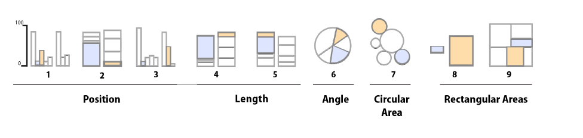

2 Visualization
- Chapter 1: Look at data
- Chapter 3: Make a plot
- Chapter 4: Show the right numbers
- Chapter 5, section 5.3 & 5.4 Plot text directly and label outliers
3 Why data visualisations
- communicate results
- explore data
- if done correctly: efficient way of processing & remembering data, becaue reduce the cognitive load and take it easy into long-term memory → because we have a limited working memory and keep in mind ~ 7 variables
- Reducing cognitive load makes the audience:
- More willing to read your analysis
- More likely to understand the data/results
- More prone to accept the results
- More likely to remember them
- Often the only part of the analysis that the audience ever sees.
3.1 How to communicate via visualization?
- How do we make sure that the graphs we make transfer:
- The right part of the data, and; with the less effort possible? ( minimizes cognitive load)
- First step in a data visualization task: Write down the main message you want to convey
Central questions:
- What are the main elements of a graph? (labels, dots, bars, facets …)

- What type of plot should you use?
- Barplots for a categorical and a numerical variable, compare the frequency
- Scatterplots for 2 numerical variables, shows covariances and relations of the two variables

3.How can we make a plot look more professional? - take it as minimal as possible, no “junk”, no Color, if no color is needed, scale comprehensible

- How to guide the reader?
- highlight the central aspect

3.2 Criteria for good graphs and visualization
Guidelines for routine plotting:
- properly chosen format and design
- use words, numbers and drawing together
- display an accessible complexity of detail
- avoid content-free decoration
- maximize the “data-to-ink” ratio
- simplify, remove everything that is not necessary
- no cherry picking in data, visuals must be chosen in relation to data, example: Age cohorts in Barcharts, longtidual changes in point charts
- reduce aesthetics to a minimal and use colour and so on only if it has a meaning.
- humans ability to see contrast is stronger for monochrome images than for color
- using color in data visualization introduces a number of other complications, because color contains the hue (Farbton) and a chrominance ot chroma (intesity or vividness of the color):
- how bright an object looks depends partly on the brightness of objects near it.
- distance of variables should be found also in a perceptually sense in the choice of colors, not only in a numerical one
- “preattentive pop-out”: Some objects in our visual field are easier to see than others → indicate with shapes, color & position.
- Most people see the Poisson-generated pattern (a random generated pattern) as having more structure, or less ‘randomness’, than the Matérn (an equally distributed), whereas the reverse is true.
- humans are always looking for structure, the tendency of infer relationships, “gestalt rules”:
- Similarity: Things that look alike seem to be related.
- Connection: Things that are visually tied to one another seem to be related.
- Continuity: Partially hidden objects are completed into familiar shapes.
- Closure: Incomplete shapes are perceived as complete.
- Figure and Ground: Visual elements are taken to be either in the foreground or the background.
- Common Fate: Elements sharing a direction of movement are perceived as a unit.
- humans can identify and estimate percentages of differences of two sizes for graphs on a different level, here the results of testing:

3.3 Channels and type of graph in overwiew


3.4 Principles of Design

Pracitcal advice
Reduce cognitive load: - Removing unnecessary clutter - More professional/aesthetically pleasant Contrast: - Eliminate unnecessary lines (all frames, use gray grid lines, etc) - ’t use a gray background - White space is your friend (allows for “breathing”) - Enlarge the labels - Use vector graphics (svg/pdf/eps) to avoid blurry figures –> Edit them in AI or Inkscape Repetition: Be consistent in different figures Alignment: Make sure you align subplots/labels Proximity: When possible, label data directly (instead of using legends)
3.5 Guide the reader
- We read plots in a Z-shaped flow: top-left to top-right to bottom-left to bottom-right

With this elements:

The most useful pre-attentive attribute: - Increases contrast - Allows for consistency (same country with the same color)
Color affect emotion and this is culture-dependent. Some responses are nearly universal - Warm colors –> alive/alert - Blue colors –> calming/focus
Color for the colorblinding: https://davidmathlogic.com/colorblind/#%23D81B60-%231E88E5-%23FFC107-%23004D40
In addition of highlighting, colours can be used to: - Represent categories (not more than 4 colors) - Represent values: - Only if necessary (i.e. you are using the x and y axis for more important variables) - Not accurate (show trends)

- left, too much: you are lost
- right, your attention is guided to the important aspects


- Qualitative: categorial data
- Sequential: The minimum or maximum is important
- Diverging: The middle value is the important one, which comparison is drawn on
3.6 how ggplot function works

required library: library(tidyverse)
In R, grammar of graphics is implemented in ggplot(), a function in the ggplot2 package.
Elements of a graph:
- The data: ggplot(data = gapminder)
- Aesthetic mappings (position, shape, color, …) – map variables to influence visual channels: mapping = aes(x = gdp, y = pop)
- Geometric objects (points, lines, bars, …) – use those mappings: + geom_point()
- Labels (titles, caption, axes labels): + labs(x = “GDP”, y=“Population”)
ggplot() is the function to plot aes or astehtic mappings is the logical connection bewtween your data and the plot element geom defines the type of plot like
geom_pointgeom_bargeom_boxplot- in this function additional elements could be added like scales, labels and so on
ggplot function is additive, you add layer by layer, e. g.:
p <- ggplot(data = gapminder, mapping = aes(x = gdpPercap, y=lifeExp))
p + geom_point() +
geom_smooth(method = "gam") +
scale_x_log10(labels = scales::dollar)Overview ggplot aesthetics: https://ggplot2.tidyverse.org/reference/index.html#section-aesthetics
Overview ggplot geometrics: https://ggplot2.tidyverse.org/reference/index.html#section-geoms